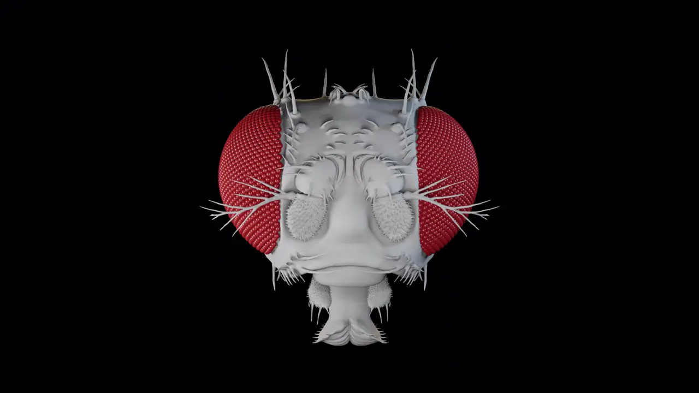

{{ p.venue }} · {{ p.year }}
{{ p.title }}
{% for k, url in p.links.items() if k != 'doi' %}{{ k }}{% endfor %} journal

{{ site.institution }}
We study vision in Drosophila, from the optics of the eye to the circuits that turn what the fly sees into what it does.
Anatomy
Micro-CT of the eye and electron-microscopy connectomes let us map the whole visual system, one neuron at a time.
From eye to brain
The geometry of the eye shapes how motion-detecting neurons respond. We test such predictions with recordings and behavior.
{{ site.tagline }} {{ site.modeling_line }}
What we do

{{ p.line }}
Resources
Explorers for every cell type in the fly visual system and brain, galleries of visual pathways, the LED displays and rigs we build, and the code behind our papers.

{{ r.line }}
{% if r.version %}{{ r.version }}{% endif %}Recent papers
{{ p.venue }} · {{ p.year }}
{% for k, url in p.links.items() if k != 'doi' %}{{ k }}{% endfor %} journal
News
Join
Postdoctoral scientists, engineers and students who want to work across anatomy, behavior, physiology and instrument building. Janelia also hosts visiting scientists and a graduate program.